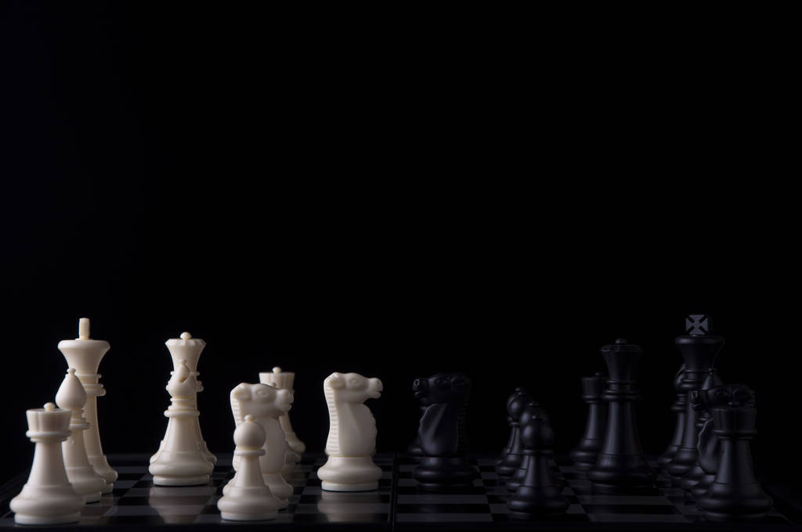
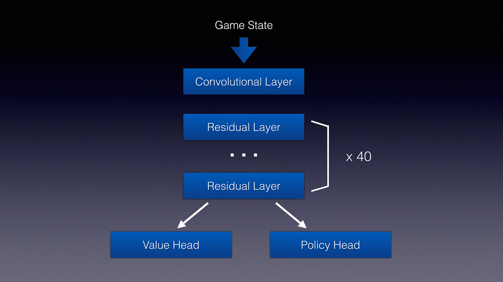
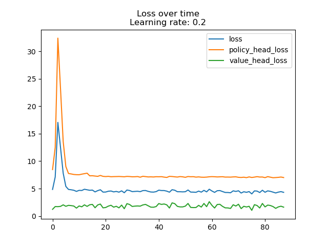
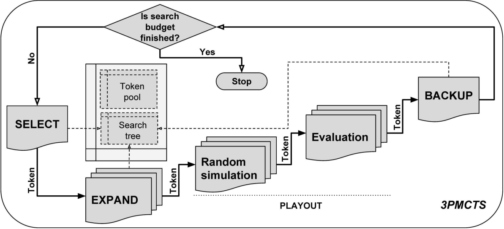
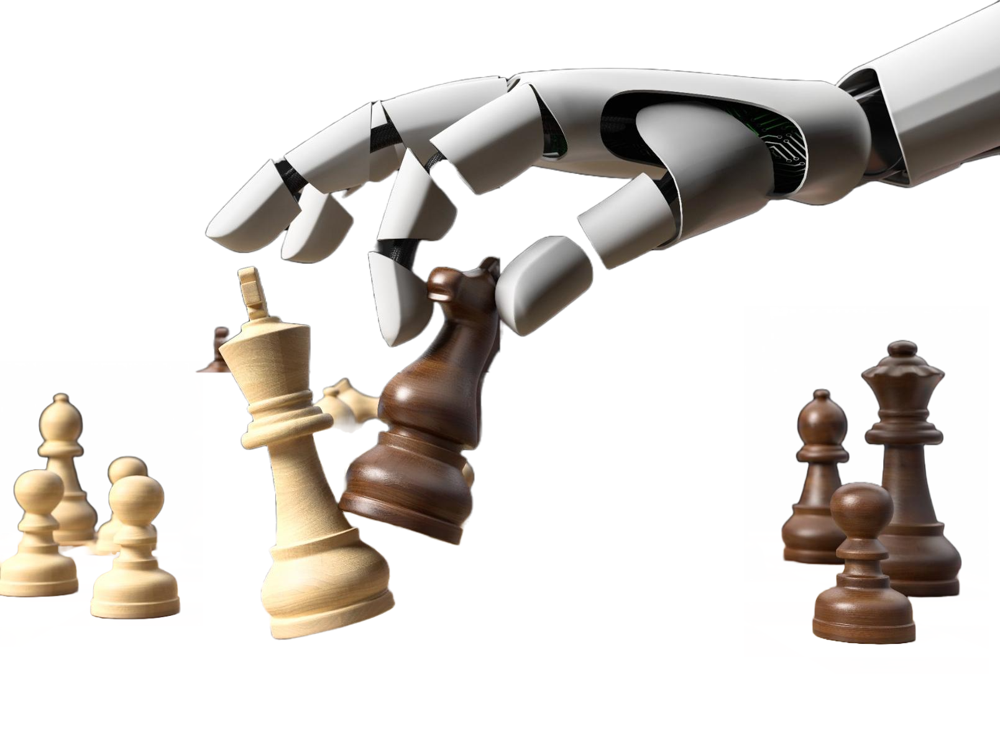

Modeling>
The Building of DrukChessAI...
THE MOTIVATION

Alpha Go
a documentary film directed by Greg Kohs and released
in 2017
Our project was motivated by the "AlphaGo"
documentary,
which demonstrated the remarkable potential of artificial intelligence in solving
complex problems,
particularly in strategic games. Inspired by this achievement, we set out to develop our
own
machine learning algorithms for building a high-level chess model. We believe that our
project
has the potential to contribute to the broader field of AI research.

Over View
The General idea
The Druk Chess AI project is an
implementation of the AlphaZero algorithm for playing the game of chess. The approach
involves training a neural network model to predict the best move for a given chess
position, using a combination of supervised learning and self-play reinforcement
learning. The trained model can then be used to play games against human players or
other chess engines.

Data Generation
The Preprocessing
To train the neural network model, the
Druk Chess AI project uses data generated through self-play. The algorithm plays
thousands of games against itself and records the moves made by both sides. This
generates a large dataset of chess positions and the moves played in those positions,
which is used to train the neural network.
THE CREATION

Neural Network
The architecture of Neural Network
The neural network used in the Druk CHess AI
project has a convolutional neural network (CNN) architecture, with multiple layers of
convolutional and fully connected layers. The input to the neural network is a
representation of the chess board state, encoded as a tensor of shape (8, 8, 18). The
output is a probability distribution over all possible moves, represented as a tensor of
shape (8, 8, 73)
THE TRAINING

Training
The More The Better ❚█══█❚
The neural network is trained using a combination
of supervised learning and self-play reinforcement learning. In the supervised learning
phase, the neural network is trained on a dataset of human-played games to learn basic
chess knowledge and strategies. In the self-play reinforcement learning phase, the
neural network plays games against itself and improves its policy and value prediction
abilities through trial and error.
IMPLEMENTATION

Monte Carlo Tree Search
The algorithm to guide model
To select the best move to play in a given
position, the Druk Chess AI algorithm uses Monte Carlo Tree Search (MCTS). MCTS is a
search algorithm that builds a game tree by simulating many possible moves and outcomes
from a given position. The algorithm uses the neural network to evaluate the strength of
each move and selects the move with the highest estimated value.
THE TESTING

Evaluation
Conclusion of the model
The trained neural network model is evaluated by
playing games against human players or other chess engines. The Druk Chess AI project
includes code for playing games using the trained model and evaluating its performance.
Overall, the chess-alpha-zero project provides an interesting and detailed
implementation of the AlphaZero algorithm for playing the game of chess. It combines
supervised and self-play reinforcement learning, neural network modeling, and Monte
Carlo Tree Search to achieve strong chess-playing performance.
Conclusion
The understanding🏆
In conclusion, the Druk Chess AI project
demonstrates the exciting potential of machine learning and deep reinforcement learning
algorithms in the game of chess. Although the results of the model are promising, there
is still significant room for improvement. With access to more powerful hardware, larger
datasets, and better search algorithms, the model could be trained more effectively and
achieve even better performance. Future research in this area could involve exploring
the performance of this model ondifferent chess variants or adapting the model to other
strategy games.